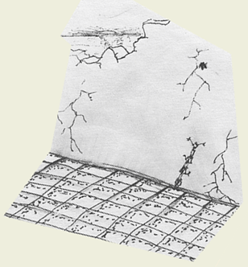
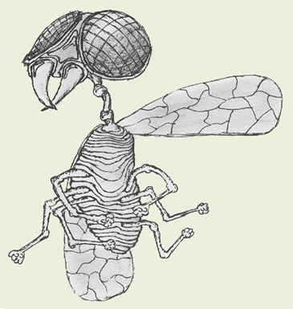
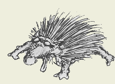

1. Закат
 - Слезай со стены-ы-ы!.. - параноидально ныли людишки где-то там, внизу. Вероятно, их желания расходились с желаниями Гельберта: он совсем не хотел слезать. Лишь устроился поудобнее, подложив под себя все шесть ног.Люди стали на плечи друг другу и попытались дотянуться до него. Увы, неудачно. Площадка внизу стала ярко-красной. Спустя мгновение их тела выцвели и обратились в пыль, которую тёплый влажный ветер бережно куда-то унёс.
Солнце давно зашло, и Гельберт созерцал мир, погрузившийся во мрак.
Подул ветер. Крылья Гельберта зашелестели, он почувствовал, что съезжает вниз. Преодолевая страшную гравитацию и ветер, он заставил своё тело ползти вверх. Остановился, задумался. Отрывки воспоминаний посещали его мозг, он мысленно возвращался в ту жизнь.
А ветер дул...
2. Тот день
Привычка помнить за Гельбертом укрепилась в тот самый исторический день конца Истории. Не мудрено, что именно этот день был наиболее частым гостем в разуме именно этой мухи. Падение небес - вот первое, что он запомнил. Увы, не последнее...Привычка помнить? Лучше сказать привычка вспоминать.
3. Детство. Отрочество. Юность
 Родившись в душистой коровьей лепёшке высшего сорта, Гельберт открыл глаза, вернее впервые протёр их, т.к. у мухи глаза всегда открыты. Так вот, он протёр глаза и восхитился. Естественно, собой. Очевидность того, что раса мух самая красивая на Земле, сделала его гордым до безобразия. Судите сами: сначала он был яйцом идеальной сферической формы. Потом он стал опарышем, с благородно-бледной и упругой кожей. Теперь же он сильная быстрая муха, которая угрожающе шуршит своими хитиновыми латами при встрече с неприятелем. Чего ещё можно желать?!Он был любознательным насекомым и поэтому часто летал около человеческих гнёзд - забавно всё-таки. Любил он и подтрунить над ними. Зная самую большую человеческую слабость - убить сидящую на стене "беззащитную" муху - он нередко впадал в страшную задумчивость, в то время как человеческая рука с "колоссальной" скоростью "летела" в его направлении. Напоследок он чистил лапки, зевал и в тот самый момент, когда человек был уже совершенно уверен в своей победе, спокойно улетал, слыша, как человек недовольно содрагает воздух и идёт поднимать упавшую картину. Гельберт презирал людей. Кто знал, что он станет единственным их развлечением спустя совсем немного времени.
4. Утро
Навспоминавшись вдоволь о прошлом, Гельберт вспомнил и о настоящем. Ведь он теперь один из немногих, кто ещё остался в живых здесь - в этом богом забытом рае. Или аде - никто толком не знал. С большими усилиями мысля прошлой логикой, Гельберт решил, что это или ад или рай - ведь туда попадают после смерти? Но вот новая волна здешней логики захлестнула его, и он не понял, зачем ему знать всё это.5. Меланхолия
Возможно, это название и не подходит для того состояния, в котором пребывал сегодня Гельберт. Но, так или иначе, то, что здесь хандрили все - от мух и до людей - было фактом более чем очевидным. Даже камни источали сплин.Пульсирующий разум не позволял Гельберту долго думать над одной проблемой, а ничем кроме метафизики здесь заниматься не имело смысла. Даже это было бессмысленно.
Гельберт в уме разделил несколько первых чисел экс-натурального ряда на ноль и, получив разные результаты, удовлетворился.
Мимо прошла кошка. Она посмотрела задумчивыми зелёными глазами на стену и, зевнув, проснулась. Естественно, больше Гельберт её не видел - кошка мгновенно растворилась в сплине, висевшем как воздух.
Всё больше и больше живых существ (да и неживых тоже) совершало акт просыпания. Это логичный итог отсутствия нормальной логики и занятия в течение многих веков. "Раньше это называли самоубийством," - вспомнил Гельберт.
6. Последние
 Кроме него здесь остался один ёж. Не морской, а такой - сухопутный. Из неживых - несколько камней, на которых сидела живая - пока - парочка. Стены уже не было. Лишь пустота. Ёж серьёзно подумывал о просыпании, чем вызывал нескрываемое недовольство со стороны камней и Гельберта. Последний укоризненно качал головой, чистил лапки и говорил о чём-то высоком - кажется, о смерти.Проблема "вечность или проснуться" стояла перед каждым из них, но самым терпеливым оказался Гельберт, чего и следовало ожидать - не было на экс-Земле существа с большим консервативным жизнелюбием.
Через несколько тысячелетий исчез последний камень, на котором до этого сидел Гельберт, ещё через пару миллионов лет - и сам Гельберт.
7.
Жжж. Ж. ЖЖЖ! Жж-ж-ж?.. Ж-ж-ж-ж...8. Эпилог
- А ведь перегрелась-таки мушка на солнышке! Спит, небось. Ну ничего, сейчас я её размажу по этой стене. Ха-ха, ничтожество!.....Подул ветер...